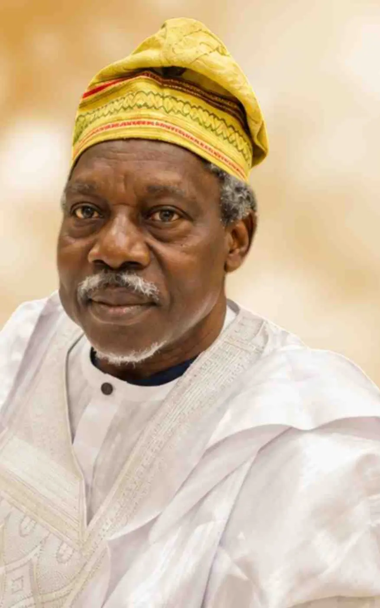

In loving memory
Clement Ayodeji OlusolaOroge
“Great Uncle”
16 August 1951 · 22 May 2026
I have fought the good fight, I have finished the race, I have kept the faith. 2 Timothy 4:7

Where we gather
Three gatherings
Everyone is welcome at each of them. If you cannot be in the room, every service is being streamed and recorded.
On the day, or long after
Watch the services
Each service is streamed live and stays on the channel afterwards, so family and friends anywhere in the world can be present.
All three recordings live on one channel, alongside anything added later.
Visit the channel1951 — 2026
The life he lived
Seventy-five years, lived at full volume: a civil servant, an evangelist without ordination, and the man who made a family feel borderless.
On 16 August 1951, the family of Revd Michael Ajayi Oroge and Mrs Dorcas Omolola Oroge received from God a bouncing baby boy. Seven days later he was named Clement Ayodeji. He was the second child and son of the couple.
He had his secondary education at Atakumosa High School, Osu, and Ilesa Grammar School, Ilesa, both in Osun State, completing his West African School Certificate at Ilesa Grammar School.
After secondary school he left for Lagos. While most of his family did not know his exact location, he secured employment at the Nigeria Ports Authority by touting his father’s name — and he never stopped appreciating his father’s legacy for the rest of his life. It was there that he worked and, studying entirely on his own, passed the Advanced Level GCE. With that result he gained admission to the University of Lagos, where he took a Bachelor’s degree in Political Science in 1978.
He served as a corps member that year, posted to Adamawa — then Gongola — State. After NYSC he taught briefly in Oyo State before joining the Federal Civil Service in 1979. As a pool officer he moved through various ministries before finally ending up at Police Pensions, and voluntarily retired as an Assistant Director before relocating to the United Kingdom.
The leadership streak that showed up in his secondary school days came into full manifestation in the civil service. Colleagues, including those older than him, consulted him on all manner of life affairs — a nature he plainly inherited from his father, the late Venerable Michael Ajayi Oroge.
By the time he became born again, he committed himself totally to God in counselling, evangelism and giving. He would use any resource in his power — time, energy, money — to do God’s business and to relieve the suffering of others. He kept a prayer and Bible study fellowship in his workplace, and daily family devotion in his home. Once, he took over a beer parlour and turned it into a fellowship centre.
He married Miss Olusola Oni before completing his first degree; the union was blessed with Grace Omolola (1977) and Michael Abayomi (1982). His third child, Oluwatosin, was born in 1989. His second marriage, to Nneka Jacinta in 1992, was blessed with three children — Victoria Ayomide, Emmanuel Ayodeji and Esther Olusayo.
For some years he spent annual holidays in the UK and the US with his second family, before finally moving to the UK with them in 2007. For the last ten years of his life he fought renal failure, and he never let it quiet him: he went on preaching, on the bus, in the house, and from his hospital bed to the doctors and nurses who cared for him.
He breathed his last at Maidstone Hospital, Kent, on 22 May 2026, in the presence of his wife and his brother — eighty-six days short of his seventy-fifth birthday.
The family albums
Photographs
Gathered from albums in Lagos and London. They are deliberately left uncaptioned — if you know the occasion or the people in one, please tell the family and it will be added.
The Book of Remembrance
Tributes
From children and grandchildren, brothers and sisters, nieces and nephews, colleagues, classmates and church family.
Take it with you
Programmes & keepsakes
Rather than carry a paper copy home, download the programmes here. They are the same documents handed out at the services.
Keep adding to it
Send a tribute or a photograph
This is not a page that closes after the funeral. Whenever a memory surfaces, or you find a photograph in an old album, send it and it will be added.